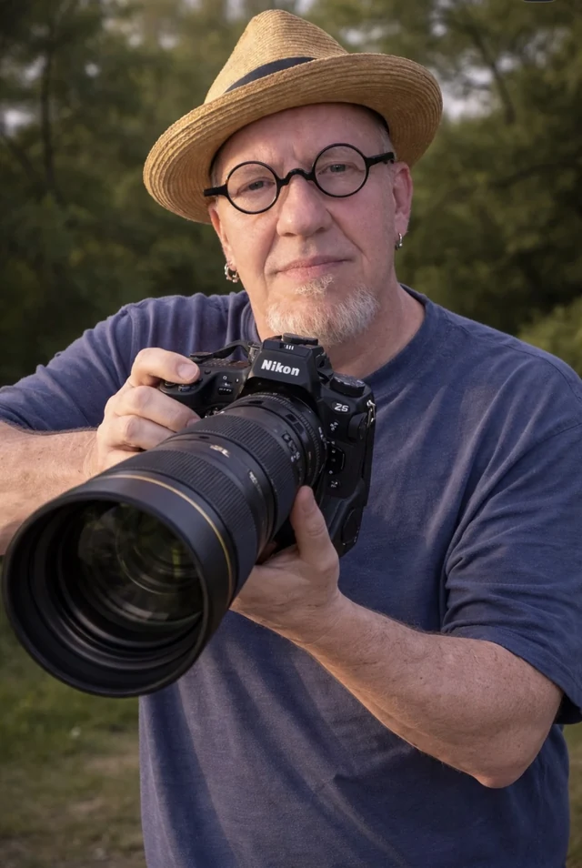

About the photographer
About Keith
Keith A. Godfrey has spent 40 years making photographs, and learning to see them before he takes them.

Trained in Commercial Photography and Graphic Design at Kilgore College, Keith has run his own studio since 1999. He photographs portraits, headshots, products, events, weddings, real estate, pets, and commercial work on location. His background in design, advertising, and print production means he knows how an image works inside a brand, a website, or a campaign, not just on its own.
His personal work leans toward fine art and the natural world. That means forests, lakes, and wildlife, but also the details most people walk past: rust, water droplets, weathered wood, insects. He shoots them with macro, selective focus, long exposures, and black-and-white. As a student of the Zone System, he would rather understand light and exposure than leave them to the camera’s automatic settings.
Keith takes every image from capture through final retouching in Photoshop and Lightroom, working mainly with professional Nikon systems. He is a member of Professional Photographers of America and KelbyOne, and his work has won numerous awards.
For Keith, photography is a way of seeing, and of turning ordinary subjects into something worth a second look.